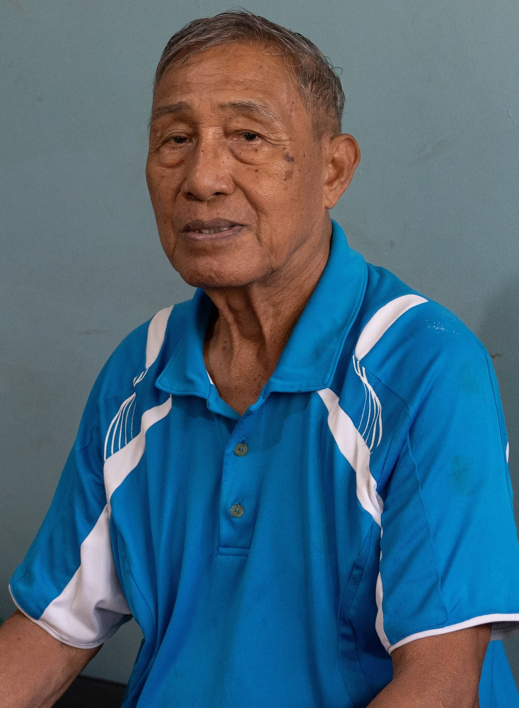
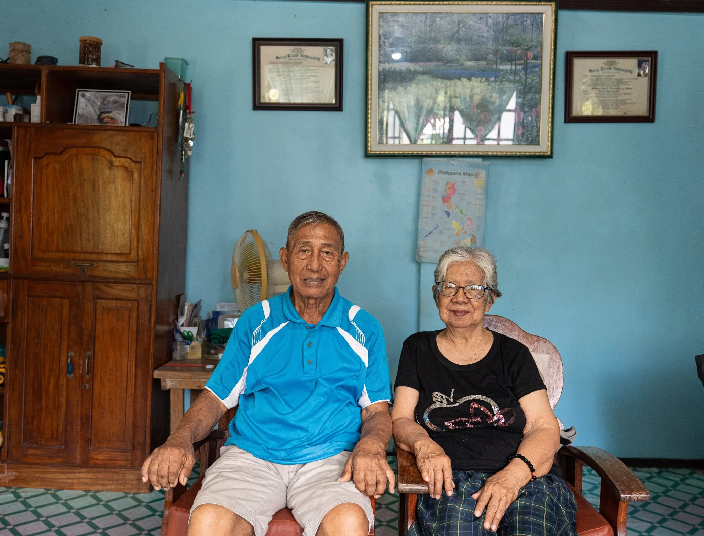

David "Inggo" Magayam Gannaban: From Camineero and Janitor to DILG APD

We're daily bombarded with depressing accounts of corrupt public officials, so it is a breath of fresh air to get to know civil servants who have risen from humble beginnings to positions of power and earned their keep with the sweat of their brow and not by the blood of their prey.
One such inspirational life story is that of David "Inggo" Magayam Gannaban, a soft-spoken and kindhearted iVanaw of Balbalasang, Balbalan, Kalinga who rose through the ranks in public service and retired as Assistant Provincial Director (APD) of the Department of the Interior and Local Government (DILG)-Kalinga.
He and his wife Carol Castro-Gannaban (b. 11 May 1946) of Sagada, Mountain Province live in Brookside, Tabuk City, Kalinga. She is a retired teacher of Tabuk National High School (TNHS) where she taught for 35 years (1971-2006).
Imagine yourself as a strappling lad in the middle of the 20th century in the hinterlands of the Philippine Cordillera with no wherewithal to pursue higher education after graduating from high school. But you have a dream and a dogged determination to better your life. So you pick up the shovel and labor for three years as a caminero 'road worker' to earn a few pesos and save just enough to leave the village for the city. Then you're off to college to the summer capital of the country where you have to work during weekdays from 3:00 am to 3:00 pm and then attend school from 3:30 pm to 6:30 pm.
That was the life of Mr. Gannaban back then. And those details about his life alone should be inspirational enough for us at a time when many live in a bubble and take for granted the privileges they enjoy today.
Born on 29 March 1942, he graduated from St. Paul's Memorial High School (SPMHS) in 1959 and studied Bachelor in Secondary Education (BSEd) at the Baguio Colleges Foundation (BCF), present-day University of the Cordilleras (UC), from 1962-1968. It took him 6 years to finish his degree because he could only enrol in a few units each term as he had to financially support himself by serving as a utility worker and kitchen helper at Brent School where many of his fellow iVanaws were employed back then.
Fresh from college, he immediately taught English and Literature at SPMHS. When he resigned from the school 3 years later, he was invited by Mr. Lloyd Tangbawan, then the Provincial Census Officer of the subprovinces of Kalinga-Apayao, to work as a clerk in his office.
In 1974, he was among the 300 young men and women who answered the call of the Department of Local Government and Community Development (DLGCD), now DILG, for training at the Community Development Center of the University of the Philippines Los Banos (UPLB).
Of the five participants from Kalinga-Apayao, he and two batchmates -- Larry Adong (father of now-DILG Apayao PD Mayer Adong), and Rose Baluloan -- survived the 10-month training. His assignments as a field worker were in the municipalities of Pasil (3 years), Lubuagan (10 months), Tanudan (2 years), and Tinglayan (8 months).
After that, he served as the Provincial Training Coordinator for three years before becoming DILG-Kalinga's Assistant Provincial Director in 1999 until his retirement in 2002. Incidentally, one of those he trained in the first regional LGOO training in 1983 was Anthony Ballug who currently serves as Provincial Director of DILG-Kalinga.
David his wife Carol will be celebrating their 50th wedding anniversary in the last quarter of this year, hopefully with their children who have had their own respective successes in life. Their first child Judith Kay is a Social Worker in Tabuk City who is married to Col. Carlos Sangdaan, Jr. (PA) of Tabuk, while their second child Sharon April, a State Auditor in the Province of Apayao, is married to Philip Constantine Mandac of Claveria, Cagayan. Their third child Erwin is an entrepreneur engaged in a poultry business and is married to Glowen Mocay of Balbalasang. Meanwhile, their last child Gideon is a travel agent living in Ireland with his wife Ma. Angelica Alonzo of Bantay, Ilocos Sur.
